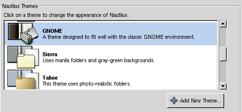
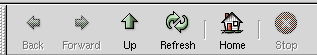
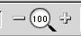
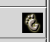

Creating themes for Nautilus
Version 1.1 - 29. September 2002
Written by Christian Fredrik Kalager Schaller
Thanks to Jacub 'Jimmac' Steiner, Dave 'Campd' Camp and Roman 'Star' Beigelbeck for providing information and help.
Nautilus has great theme capabilities both for its GUI and for the file and device type icons it presents. This tutorial which try and explain how Nautilus themeing works and how you can make themes for this great file manager.
Understanding the Natilus theme engine
The first thing you need to know is how the Nautilus theme engine works. When explaining I will base my explanation on where Red Hat Linux place this files, they might be placed elsewhere on other distributions. Nautilus keeps all its files for its themes under
'/usr/share/pixmaps/nautilus/', in this directory you should be able to see directories with the names of the themes that you currently have installed on your system. On my computer that includes the standard themes with names such as 'sierra','tahoe','gnome' and of course 'default'.
When you look at those themes you will notice that there is a different amount of files in each, there are two reasons for this. First of all a theme does not need to supply icons for everything as nautilus will use the correct icon from the default theme if a specific icon is missing. Secondly a theme might contain many sizes of each icon.
When creating icons for Nautilus you have a few specific formats to choose between namely
PNG, SVG and XPM. PNG and SVG is the two recommended ones for respectively bitmap icons and vector graphics icons. the XPM support is in there mainly for legacy support. It is important to note that there is no need to provide multiple size icons of SVG icons size they can scale to any size without reducing their displayed quality. SVG icons are a little heavier for the computer to render however so slow machines might have problems running Nautilus using such themes.
Also in each theme directory you find some .xml files. The one with the name of the theme for instance 'crux.xml' is the most important one since it contains information on what background color to use for the sidebar and main panel in nautilus and text for the theme chooser in Natilus.
I suggest starting with another theme when creating a Nautilus theme and then replace the icons one by one. Creating a directory with the same name as your planned theme and creating the themename.xml inside it is all that is needed to make the theme available in the Nautilus theme selector.
Step 1. Creating a theme XML configuration file
Creating a theme starts with creating a directory for you theme, either by just doing a mkdir or but copying another theme as suggested above. Then you are ready to start setting up your theme.
Below you see an example themename.xml file. Look it over and I will explain it line by line below.
<?xml version="1.0"?>
<theme _name="Blue Danube" _description="This is a theme for Nautilus inspired by the blue Danube.">
<sidebar sidebar_background_tile_image="./side_bar_image.png"
sidebar_background_color="#474A7C-#22233A:h"
tab_piece_images="sidebar_tab_pieces" combine="true"
left_offset="0" shadow_offset="1" text_h_offset="-4" label_color="#FFFFFF"
tab_font="Helvetica Bold" />
<directory background_color="#F0F0F0" selection_box_color_rgba="0x727D974C"
selection_box_color="#727D97"/>
<icon highlight_background_color="#000000" highlight_text_color="#FFFFFF"
text_fill_color="#FFFFFF"/>
<thumbnails frame_offsets="3,3,6,6"/>
<throbber frame_count="30" url="http://www.gnome.org/nautilus/" delay="75"/>
<zoom_control number_v_offset="-1" number_h_offset="-2"/>
</theme>
If you have edited XML or HTML files before the format for this is fairly straightforward. Between each < and > symbol there is some parameters being set. The first line simply states that this is a xml version 1.0 file.You will not have any need to alter this. The second line contains the name of the theme and a description. This is the information that is available in the theme selector in nautilus so make it descriptive.

The third entry which starts with '<sidebar' is the setting for the nautilus sidebar. The format for the sidebar_background_color parameter is for gradients using standard RGB format ( you find a nice overview of some RGB codes here. The :h at the end can be replaced by :v which gives you either a horizontal of vertikal gradient. If you don't want a gradient you can of course just use a plain color code. Also in case you wonder why you set both a tile image and a background color, well it is because PNG images has support for transparency so you can make some nice effects mixing gradient backgrounds and transparent tiles.
There is also a tab_piece_images setting here, and all the parameters after that are for the tabs. Creating your own set of sidebar tabs is quite hard and I have never done it myself, I will due to that not go into any details for changing these settings. If you want to you can experiement with changing these yourself. Things like label_color and tab_font can of course be changed as you wish, but make sure that for instance the font you choose actually works with the tabs. I will show you the tab images later in this document.
The next entry to look at is '<directory' which sets some parameters for your file view. The tricky one here is the selection_box_color_rgba parameter which lets you set a alpha transparent color
for the selection box that appears when you select more than one icon using the mouse. I have no
easy directions to give you for finding codes to put here. So all I can do is explain how it is composed the example seen (0x727D974C) that first two numbers is the hew code which simply means that the numbers coming after is hex codes. Then we have a two digit number for Red, Green, Blue and Alpha respectivly. So by altering these two digit code you can increase/decrease the amount of each color and level of alpha transparency.
The '<thumbnails' setting lets you choose the size of the frame around the thumbnails of images in the nautilus icon view. Nautilus as you probably know makes thumbnails of the images in the directories you view and present them as an icon for the image in question.
The '<throbber' parameters is for setting how many images you have in your throbber animation and also what URL will be opened when someone clicks on the throbber.
Lastly is the '<zoom_control' parameter which lets you adjust the vertical and horizontal offset of the number displayed. This is important so that you can adjust its placement to fit with the zoom_body.png you created above.
Ok, so now we got the main XML file covered.
Step 2. The tabs in the sidebar
Ok, as mentioned earlier if you need sidebar graphics. I strongly suggest you copy one of the two made by Eazel from one of the other standard themes. This doesn't mean you can't do some themeing however. The tab graphics are to be put in a subdirectory called sidebar_tab_pieces as defined in the XML above. Once you have copied them over you can apply your own color and effects to these graphics to make them fit with the rest of your theme.
Step 3. Creating the icons
Ok, now we are over to the fun part of theme creation, the icons. The first icons you want to create are the ones for the two standard desktop entries. The home icon and the trash-can icon.
Remember however that creating all these icons are voluntary in the sense that if you don't provide one Nautilus will just use the one from the default theme.
The Home icon is called desktop-home.png (temp-home.png in Nautilus for GNOME 1). For the trashcan you need two icons, one for empty and one for full. They are called trash-empty.png trash-full.png. You can also optionally add a third called trash-empty-accept.png which will be displayed when you move something over an empty trash can to dispose of it.
Once these icons are done, then the next natural step is creating folder icons. You need two icons for folders. One basic one which you name i-directory.png, and another one called i-directory-accept.png which gets displayed when you drag something above the folder to drop it into the folder.
The next step is creating icons for the devices on the system. You need the following:
- i-blockdev
- i-symlink
- i-chardev
- i-directory
- i-executable
- i-fifo (not provided by other themes currently)
- i-regular
- i-search (Can be omitted as search functionality is currently not on by default)
- i-sock (not provided by other themes currently)
- loading (displayed when Nautilus is working with a file, for instance generating a thumbnail)
These icons are defined in the nautlilus-icon-factory.c file as can be seen in the link below.
http://cvs.gnome.org/bonsai/cvsblame.cgi?file=nautilus/libnautilus-private/nautilus-icon-factory.c&rev=&root=/cvs/gnome
Now you are ready to start with the vast majority of the icon creating process. The default mime types icons are not part of the nautilus package rather they are shipped with the gnome-mime-data package, so if you look into the 'default' directory under '/usr/share/pixmaps/nautilus' you will see that there are no mime type icons there. So the easiest solution is to look at theme which has a reasonably complete set of icons and just make the same icons as is in that theme. Scaleble Gorilla from Ximian in a good theme to look at. However if you want a complete list of possible mime-type icons or want to add new ones you need to look at the gnome-mime-data module in SVN. The file gnome-vfs.mime defines all the mime-types currently available (http://cvs.gnome.org/bonsai/cvsblame.cgi?file=gnome-mime-data/gnome-vfs.mime&rev=&root=/cvs/gnome). You can see what the mime type icon names should be by looking at the mime type definitions in that file.
Step 4. Preparing icons for emblems
One of the nice features of Nautilus is the concept of emblems. Emblems are little graphics you can attach to your files and folders to make the files stand out from the rest. These little graphics usually are designed to let you mark the files or folders with a sign giving you some information on the content. Current emblems include things like 'Certified','Ok','Draft','Important','Urgent' and so on. I will explain how you can add emblems for use in your themes later, but first you need to know how you can extend the way emblems work with your current icons.

The image above shows the default behavior for emblems. When you add emblems to your icons, folders, devices or images they start in the top right corner and move their way down and around the icon. If you don't want that behavior for specific mime types, folders or devices you can change it by creating a xml file with the same name as the icon, for instance for the i-directory.png icon you create a i-directory.xml file. The format of that file should be as shown here:
<?xml version="1.0"?>
<icon_set>
<icon size="48" attach_points="20,36|50,36|50,0|20,0" />
<icon size="72" attach_points="30,54|75,54|75,0|30,0" />
<icon size="96" attach_points="40,72|100,72|100,0|40,0" />
<icon size="192" attach_points="80,144|200,144|200,0|80,0|320,144|320,0" />
</icon_set>
The format is rather simple as you see. A thing you might notice is that the attach_point coordinates are defined for different icon sizes. The next section of this document will explain how you can improve the look and speed of your theme by providing your icons with more than one size.a range of premade sizes for your theme. It is important to remember here however that a 48x48 pixels icon stretched to 192x192 pixels inside Nautilus is still a 48x48 icon as far as
Nautilus is concerned. So unless you actually plan to provide icons in a certain size there is no reason to create lines for other sizes then the ones you actually provide.
The format of the attach points is coordinates in a x,y fashion separated with pipe symbols. The first emblem added to an icon will go to the first coordinate the second to the second coordinate and so on.
Step 5. Making your icons look good when scaling
If you made your icons in the SVG graphics format this is no issue for you and you can safely jump on to the next step. If you made your icons in PNG format however you should consider if you want to add versions of your icons in some larger and smaller sizes. How many different sizes and what sizes are all up to you. All you need to do to get Nautilus to be able to utilize your pre-scaled icons are adding a number after them with the pixel size. For instance if you add a set of 16x16 versions of your icons then you create an icon file called iconname-16.png.
The reason for this is twofold. The primary reason is that if a user enlarge your 48x48 icon to something like 72x72, either by stretching it or by zooming the icon view, it will start to look bad. Jagged edges and the like. The second reason is that there is a small performance gain in making the scaling Nautilus need to do as little as possible.
Anyway the way these alternate size icons work is that as users either stretch or zoom the icons the Nautilus will use the icon which pixmap size is closest to the one currently being used and scale that to fit exactly with the size the user requested.
Step 6. Creating your own emblems
Themes in Nautilus is not really theme-able, and making emblems should probably been seen as a separate activity. But you can of course add your own set of of emblems which will fit well with your theme. Emblems are stored under '/usr/share/nautilus/emblems' on my Red Hat system. They are usually around 40x40 pixels in size but if you look at the existing ones you see that the size and form varies greatly.
Step 7. Creating icons for the Nautilus Toolbar
At this time the Nautilus toolbar is themed through the .gtkrc file which is part of Gtk+ themes.
This was change came with version 2 of Nautilus because the separate toolbar themeing created some UI inconsistencies which was troublesome in regards to accessibility.
The Zoom tool and throbber is still themed as part of the Nautilus themes setup and is not themed through, gtkrc. So at this point themeing the Nautilus toolbar is not really part of Nautilus themeing, but a part of Gtk+ 2.0 themes. I will in order to provide completeness I will document them here anyway.
The first thing you want to do is create new images for the Nautilus toolbar. You need a total of 9 images for this. When creating these files remember to be very precise when it comes to things like letter case and whether you use underscore or hyphen symbol. If you put an icon in your theme and the default one still shows up when trying to test the theme then you probably misnamed your icon file. The images needed are the following:

- Back.png
- Forward.png
- Up.png
- Refresh.png
- Home.png
- Stop.png
The size for these images are 32x32 pixels. If you make them bigger or smaller Nautilus will just scale them to this size so you might as well use it to save the CPU cycles.
To make your new Nautilus toolbar icons part of a Gtk + 2.0 theme you need to add the following lines to the .gtkrc file:
style "icons" {
stock["gtk-go-down"] =
{
{"stock_down_arrow_16.png", *, *, "gtk-menu"},
{"stock_down_24.png", *, *, "gtk-large-toolbar"}
}
stock["gtk-go-back"] =
{
{"stock_left_arrow_16.png", *, *, "gtk-menu"},
{"Back.png", *, *, "gtk-large-toolbar"}
}
stock["gtk-go-forward"] =
{
{"stock_right_arrow_16.png", *, *, "gtk-menu"},
{"Forward.png", *, *, "gtk-large-toolbar"}
}
stock["gtk-go-up"] =
{
{"stock_up_arrow_16.png", *, *, "gtk-menu"},
{"Up.png", *, *, "gtk-large-toolbar"}
}
stock["gtk-home"] =
{
{"stock_up_arrow_16.png", *, *, "gtk-menu"},
{"Home.png", *, *, "gtk-large-toolbar"}
}
stock["gtk-refresh"] =
{
{"stock_up_arrow_16.png", *, *, "gtk-menu"},
{"Refresh.png", *, *, "gtk-large-toolbar"}
}
stock["gtk-stop"] =
{
{"stock_up_arrow_16.png", *, *, "gtk-menu"},
{"Stop.png", *, *, "gtk-large-toolbar"}
}
}
widget "Nautilus*" style "icons"
Themeing the Zoom tool and the throbber
These two components of the toolbar is part of the Nautilus theme package. You need the following images to theme them:

- decrement.png
- zoom_body.png
- increment.png
The size of the increment and decrement images are 16x16 pixels. The zoom_body image can vary some more in size but a width of 32 pixels and a height of 16 is the most common. The example zoom_body image above is actually 32 pixels wide and 28 pixels high. Also notice that these image names are written with lower case front letters as opposed to the ones above.
The last piece of the Nautilus toolbar that you need to make is the throbber (the animated icon in the top right corner.

You create the throbber by creating a directory called throbber in the theme directory you created earlier. Then you create the images for your animation and name them 001.png and upwards. You also need to create a rest.png image which will be the image that is displayed when Nautilus is inactive. The animation can contain as many images as you like, but around 12-13 has proven to be a fitting number to get a smoth animation that actually manages to run through before Nautilus is done. The throbber images should be 30x30 pixels big.
Ok, now you have created all the images need to theme the toolbar in Nautilus, lets look at the theme configuration XML file.
Step 8. Finishing
The last thing you need to do before your theme is ready for publication is create a presentation icon. Presentation icons are the image that will appear with your theme in the Nautilus theme selector. The standard for this have it consist of three parts as shown in the example below.
The backmost image illustrated the sidebar and iconview background colors. Then you also add your folder icon and your unknown mime-type icon as shown. The size of this icon is 447x302 pixels and should be placed in your theme directory with the rest of the icons.
Some notes:
If you look at a theme like Unscaleable Gorrilla from Ximian you will notice that there is a directory called extra in that theme. This is not part of the Nautilus theme system, but just a folder containing extra icons that the artists thought that users could want to use. If you make icons for your theme that don't get used by Nautilus then you could do the same.
Poststep 1: Packaging
For users to be able to install you theme easily you should probably package it. I have pasted in the SPEC file that Ximian uses to create their theme RPMS. You should use this as a template for creating your own SPEC file.
# RPM specfile for ximian-south module
# Generated Fri Mar 29 19:07:06 2002 GMT by Ximian build system
# $Id$
# from $Id$
%define nam ximian-south
%define ver 1.3.5
%define ximrev 1
Name: ximian-south
Version: 1.3.5
Release: 1.ximian.1
Vendor: Ximian, Inc.
Distribution: Ximian GNOME for Red Hat Linux 7.1 / i386
Copyright: GPL
BuildRoot: /var/tmp/%{nam}-%{ver}-root
Docdir: /usr/share/doc
BuildArch: noarch
URL: http://ximian.com/
Source0: nautilus-ximian-south-1.3.5.tar.gz
Summary: Ximian South Nautilus theme
Group: User Interface/Desktop
Provides: ximian-ximian-south = %{?epoch:%{epoch}:}%{version}-%{?ximrev:%{ximrev}}%{!?ximrev:%{release}}
%description
This package provides the Ximian South theme for Nautilus
%files
%defattr(-, root, root)
%doc README
/usr/share/pixmaps/nautilus/ximian-south
# $RPM_COMMAND is an environment variable used by the Ximian build
# system to control the build process with finer granularity than RPM
# normally allows. This specfile will function as expected by RPM if
# $RPM_COMMAND is unset. If you are not the Ximian build system,
# feel free to ignore it.
%prep
case "${RPM_COMMAND:-all}" in
dist)
%setup -q -D -n ximian-south
;;
all)
%setup -q -n ximian-south
;;
esac
%build
MAKE=${MAKE:-make}
RPM_COMMAND=${RPM_COMMAND:-all}
DESTDIR=${DESTDIR:-"$RPM_BUILD_ROOT"}
ARCH=%{_target_platform}
export MAKE RPM_COMMAND DESTDIR ARCH
case "$RPM_COMMAND" in
prepare|all)
true
;;
esac
case "$RPM_COMMAND" in
clean|all)
if [ "/" != "$DESTDIR" ]; then
rm -rf "$DESTDIR"
fi
;;
esac
case "$RPM_COMMAND" in
build|all)
true
;;
esac
%install
MAKE=${MAKE:-make}
DESTDIR=${DESTDIR:-"$RPM_BUILD_ROOT"}
# export DESTDIR
case "${RPM_COMMAND:-all}" in
install|all)
mkdir -p ${DESTDIR}/usr/share/pixmaps/nautilus/ximian-south; cp -r * ${DESTDIR}/usr/share/pixmaps/nautilus/ximian-south
;;
esac
%clean
DESTDIR=${DESTDIR:-"$RPM_BUILD_ROOT"}
export DESTDIR
case "${RPM_COMMAND:-all}" in
clean|all)
if [ "/" != "$DESTDIR" ]; then
rm -rf "$DESTDIR"
fi
;;
esac
%changelog
* Fri Mar 29 2002 Ximian, Inc.
- Version: 1.3.5-1.ximian.1
- Summary: New build.
- New automated build.